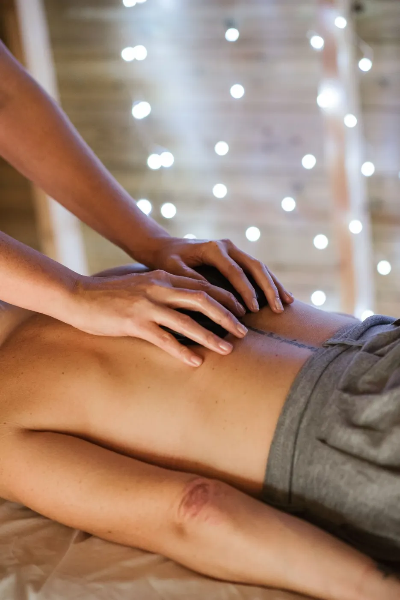
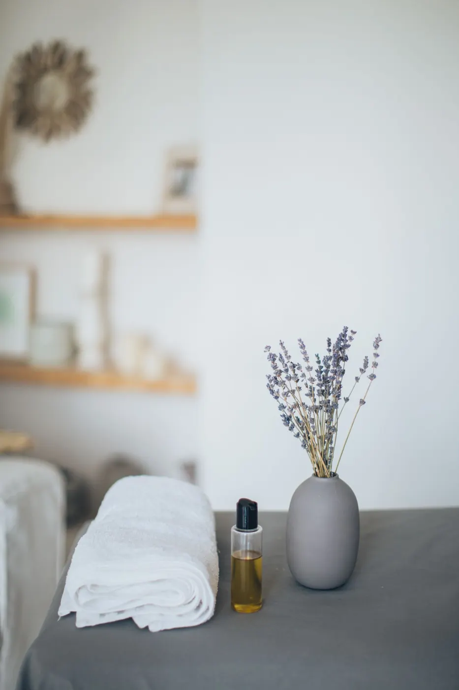

Quiromasaje a domicilio en Barcelona: contracturas, tensiones y relajación.
Pedir cita por WhatsAppLlamarPara contracturas y tensiones.
Según tus molestias.
Para desconectar.
Todos los días, de 10 a 20:30.
Cuéntame qué te pasa o qué buscas.
Elegimos día y hora.
Voy con todo el material necesario.


| Lunes | 10:00–20:30 |
|---|---|
| Martes | 10:00–20:30 |
| Miércoles | 10:00–20:30 |
| Jueves | 10:00–20:30 |
| Viernes | 10:00–20:30 |
| Sábado | 10:00–20:30 |
| Domingo | 10:00–20:30 |
Horario según la ficha pública; conviene confirmarlo por teléfono.
Las reseñas destacan su profesionalidad y puntualidad, masajes adaptados a cada persona para lesiones, tensiones y contracturas, y que acude a casa con todo el material. 25 reseñas con media de 5,0.
Resumen neutral de reseñas públicas de Google Maps. Sin citas literales.